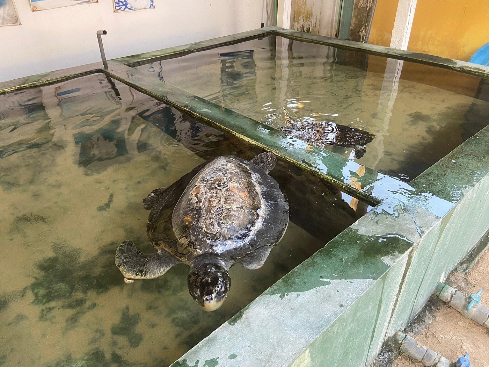

hikkaduwa turtle hatchery

Mission and Humble BeginningsSituated a few kilometres north of the main Hikkaduwa town lies the Sea Turtle Hatchery and Rescue Centre, a centre with the aim of conserving some of the endangered species of turtles in the world. It is just one of many turtle hatcheries in the southern coast of the island. Initially starting as a community project to help protect the biodiversity of the southern coast, it is now a fully-fledged hatchery and rescue centre with dedicated teams that work round the clock to study, care and protect several turtle species. Its Conservation EffortsPresently, there are five species of turtles that are taken care of in the hatchery and rescue centre. Such species are the Olive Ridley Turtle, Leatherback Turtle, Loggerhead Turtle, Hawksbill Turtle, and Green Turtle. The facilities of the sea turtle hatchery and rescue centre are all state-of-the-art, complete with water tanks to care for newborn turtles, along with adult turtle species that have been rescued from the sea due to injuries. One of the more peculiar sights in the centre is the area in which the turtles lay their eggs, as they have distinct little mounds of sand piled neatly between one another. Each of these mounds is monitored closely to calculate the hatching process of the turtle eggs. |
|
|---|
 |
 |
|---|